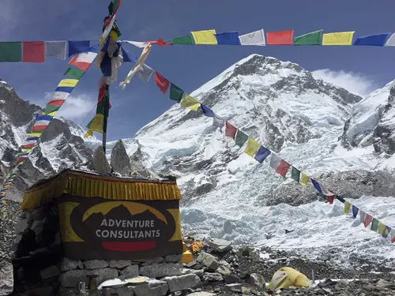
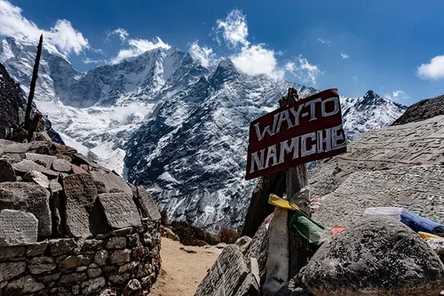

Illam 3210m


Ilam is famous for its natural scenery and tea production. Visiting Kanyam and Antu Danda offers a peaceful escape with breathtaking views of the fog rolling over the hills.
Everest Base Camp


"Standing at 5,364 meters at the foot of the world’s highest peak. A journey through the Khumbu region, passing through Sherpa villages and icy glaciers."